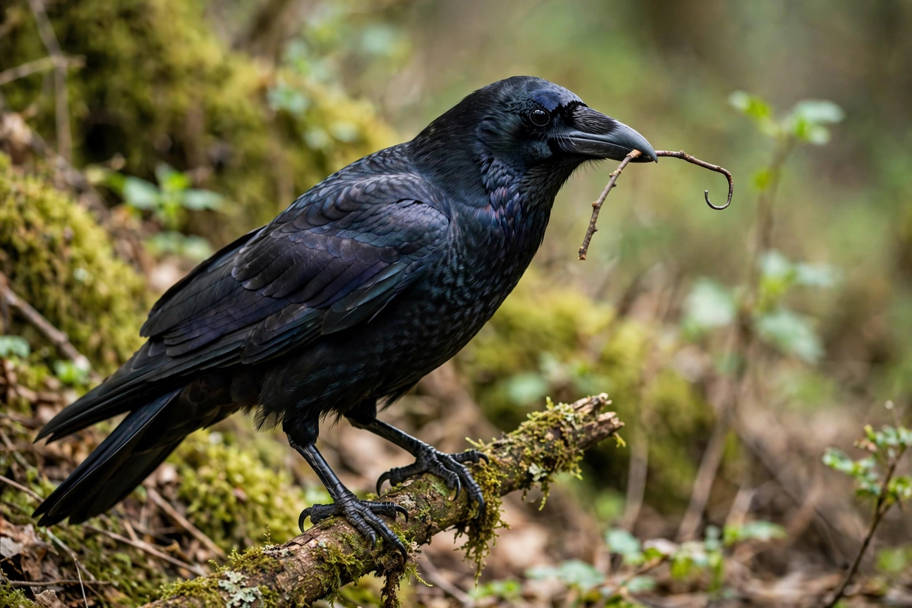

| Scientific name | Corvus moneduloides |
|---|---|
| Family | Corvidae |
| Range | New Caledonia |
| Conservation | Least Concern (IUCN) |
The New Caledonian crow (Corvus moneduloides) is an all-black, mid-sized member of the corvid family endemic to New Caledonia, a French Pacific territory. It is renowned in animal cognition research for its exceptional tool-making and problem-solving abilities, rivalling those of great apes in some experiments.
In the wild, these crows manufacture several distinct tool types: hooked tools carefully trimmed from twigs, and pandanus-leaf tools cut to standardised shapes with barbed edges, used to extract wood-boring grubs and other prey from crevices. There is evidence of regional variation in tool design — possible cultural transmission — and experiments led by researchers including Gavin Hunt and Alex Kacelnik have shown that captive crows can bend unfamiliar materials (e.g. wire, pliers-like strips) into hooks to retrieve food, and can solve multi-step puzzle tasks. One famous subject, "Betty", spontaneously bent a straight wire into a hook in 2002.
The species measures about 40 cm in length, with glossy black plumage, a relatively straight bill adapted to holding tools and binocular vision enhanced by large forward-facing eyes. It feeds on invertebrates, small vertebrates, fruit, seeds and eggs across a range of forest habitats on Grande Terre and Maré Island. The prolonged dependence of juveniles on parents — up to two years — may support the social learning of tool skills.